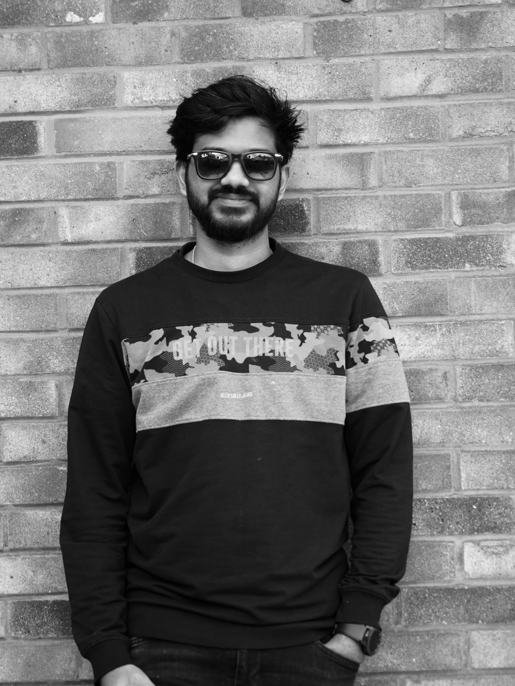
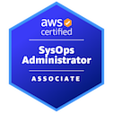
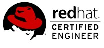

I'm Bibin Joy.
I build and run the platforms other people's work depends on: cloud infrastructure, monitoring, and the pipelines that ship it all without anyone noticing.
Venturing into the DevOps frontier
Driven by an unwavering interest in cloud and automation — I spend most of my time in AWS, Terraform, and Linux, and the rest of it figuring out why a pipeline that worked yesterday doesn't work today.

Where the experience comes from
A working history of production systems, migrations, and the incidents that come with both.
Enterprise Tooling Team — supporting monitoring and infrastructure platforms that underpin critical citizen-facing services.
- Administer BMC TrueSight: monitoring configuration, threshold policies, blackout management, onboarding.
- Support Entuity for network and infrastructure monitoring.
- Contributing to the migration from BMC TrueSight (TSOM) to BMC Helix.
- Incident, problem and change management under ITIL, using ServiceNow.
- 24/7 on-call rota, planned maintenance, patching, and post-change health checks.
- Cross-platform troubleshooting across Windows and UNIX via RDP and SSH.
AWS, Terraform, Jenkins CI/CD, Docker, and Linux server administration for scalable infrastructure.
Network design, implementation and maintenance, optimising performance and connectivity.
Designed, implemented and maintained network infrastructure supporting the project's objectives.
Foundation in computer science — software development, data structures, and networks.
GitHub Actions continuous deployment
A CI/CD pipeline built with GitHub Actions, Packer, Terraform and Ansible — from a commit to a running instance in AWS, with no downtime along the way.
- GitHub Actions Triggers the pipeline on commits and pull requests; runs build, test and deploy.
- Packer Bakes an immutable AMI so every deployment starts from the same known state.
- Terraform Provisions the AWS side — EC2, load balancers, auto-scaling groups.
- Ansible Rolls the latest release out across instances without downtime.
Training & certification
Credentials that back up the day-to-day work.



- Training DevOps Training Program
- Training CCNA & MCSE Training Program
Some of my clicks
Photography is the hobby that keeps me off a keyboard — that, travel, and the occasional film.
Get in touch
Pipeline's finished running. If you'd like to talk infrastructure, opportunities, or just say hello — reach out.